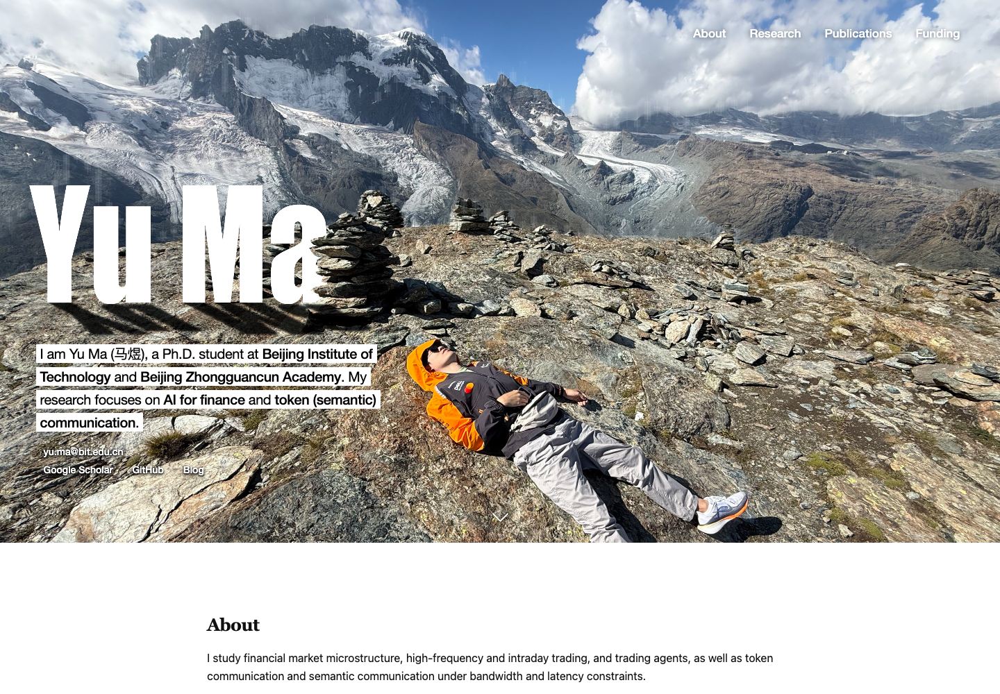

2026-10-18 · responsive-hero
打开完整功能预览 · 详细记录与复查命令 · 视窗断言 · 交互断言
1440px 至 750px：固定左侧、连续裁去右侧。750px 以下：保持左侧约 52.08% 的构图，整体缩小。姓名、人物头部与上身、逐行白底介绍及联系方式共同保留在照片上。
15 组视窗检查、54 项单元测试通过；桌面截图与当前确认版逐像素一致。连续调整宽度、触摸、键盘、自动扫亮及减少动态效果检查通过。已查看下列截图及全部尺寸概览。
浏览器证据来自 Chrome 与移动设备模拟。实体折叠屏及 iPhone Safari 尚待实机检查。
缩放细化：750px 时介绍为20px，486px 时为15.072px，390px 时为13.28px；文字按比图片更缓的速度缩小。尺寸变化后的画布即时重绘，24次画布尺寸通知结束时的空白间隙由24次变为0次。重绘证据 · 文字缩放前后对照（v1／v2）
